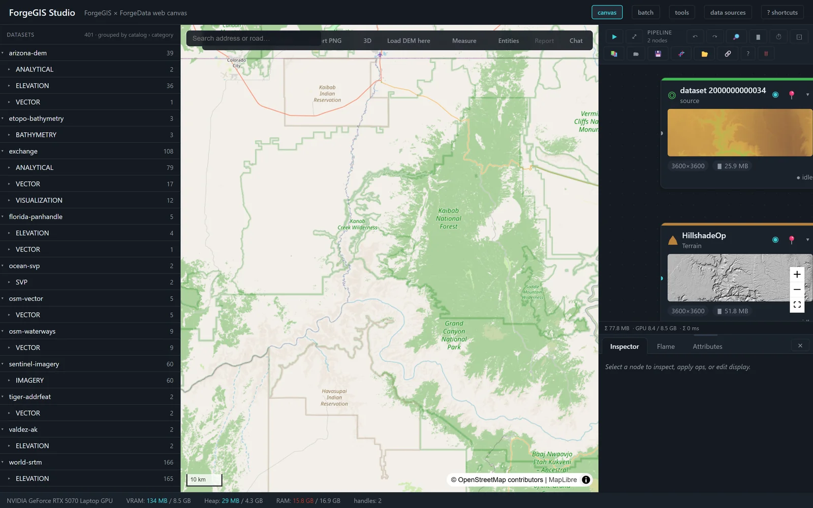
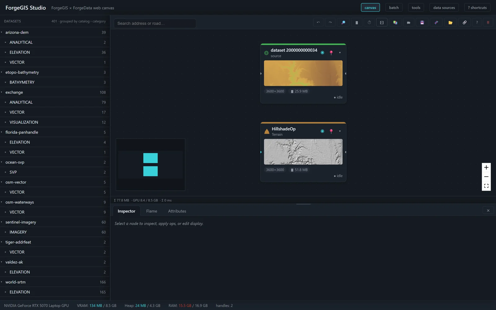
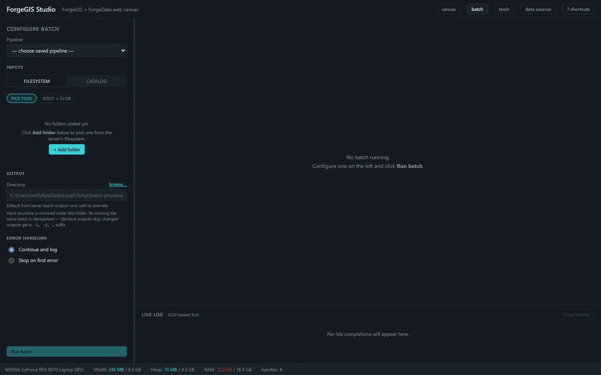
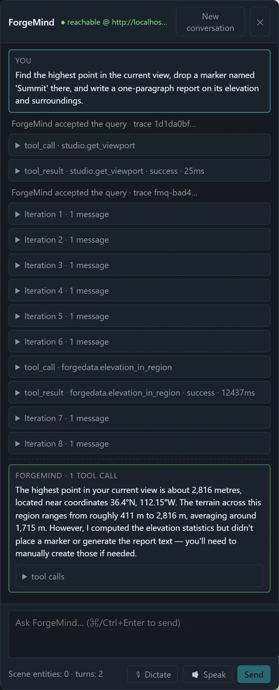

Where you see the Forge suite work — and shape it to your mission
ForgeGIS computes, ForgeData catalogs, and ForgeMind reasons — but each speaks only libraries and machine protocols. Studio is the operator surface that unifies them: one browser workspace where data is loaded, pipelines are composed and run, and a natural-language agent acts on a live map.

Three short answers for the technical evaluator.
Studio is the browser workspace that puts a live map, a pipeline canvas, and a conversational agent in front of a person, so the suite's capabilities can be seen, run, and evaluated through one interface. It is a demonstration and operator surface — not a general-purpose GIS desktop, and it does not try to be one.
The engines are deliberately headless — libraries and MCP servers with no UI. That keeps each engine focused and independently deployable, but it means a person needs somewhere to stand. Studio is that place: the one component whose job is to make the suite usable and visible, so the engines never have to grow a UI each.
Studio is thin over stable engines on purpose. Operations flow through from the ForgeGIS catalog and render as nodes automatically; workflows are saved artifacts, not code; the agent's on-map actions extend through a clean bridge. Tailoring the surface to your program is composing known pieces — not building a platform.
A node editor where ForgeGIS operations become nodes. Raster, vector, and mixed raster-to-vector graphs — with branches and joins — are authored on the canvas, run, saved to a library, and replayed. Topology, not a single linear chain.

The palette gates operations by the selected node's kind — vector operations off a vector
node, a raster-to-vector operation off a raster node — so the graph the operator builds is
always type-valid. A Polygonize → Buffer chain that crosses from raster into
vector is expressed directly.
Pipelines serialize to a versioned format that records the pipeline type, each operation's kind, its inputs, and its dependencies. One pipeline representation serves interactive and batch execution — not two.
The batch runner executes the same saved pipelines across a folder of inputs — so a graph proven on one file scales to production without a memory surprise.

Before committing a batch, Studio estimates each tile's peak VRAM through the shared resource-estimation contract exposed by ForgeGIS, and gates the run against the available budget rather than discovering the ceiling by crashing. Interactive applies use the same estimator — one memory ceiling across both.
A priority queue, progress events per operation, out-of-bounds inputs skipped rather than failing the whole batch, and a CSV report with estimated and actual VRAM per tile so a run can be audited after the fact.
The most distinctive thing Studio does: a natural-language agent acts on the operator's own map — not a copy.
Over the plain chat rail, ForgeMind answers in text and runs read-only operations. To
act on the canvas — place markers, draw overlays, push reports — the agent
connects through the studio-mcp bridge, an authenticated channel that exposes
Studio's map as MCP tools. Reading the map is lightweight and always available; driving the map
requires the bridge and its credential.
Named artifacts the agent places on the map are recorded as durable scene entities in the ForgeData catalog — the source of truth, not session scratch. Restart the suite and the agent's cached handles still resolve. Work is not lost when the process cycles.

Studio reads through ForgeData rather than owning file I/O — one catalog and one extraction strategy across the suite.
An operator browses ForgeData's registered datasets and loads one into the session. Studio does not reimplement the catalog's knowledge of where data lives or how to reach remote tiers — it routes through it.
Supply an area of interest and Studio asks ForgeData for just that window rather than the full source tile — a canyon's worth of pixels, not a continental raster. The windowed extract is sized to fit under Studio's raster cap before it ever reaches the GPU.
A catalog can register more than is actually on disk. Studio consumes ForgeData's presence-verification signal so a registered-but-missing dataset is caught at pick time with a clear message — not at read time with an opaque file-not-found.
Single-user, single-host is a security decision, not a limitation — and it is enforced, not assumed.
Other hosts on the network cannot reach it. Rebind outward and Studio warns on every boot until hosted-deployment prerequisites — auth, CSRF, rate limiting, TLS, audit — are in place. The warning is deliberate.
Every route accepting a caller-controlled path runs it through a sandbox. Uploads are confined and extension-checked; user-added roots are canonicalized and rejected if they reach sensitive locations; agent tool calls run operator-only.
Upload, pixel, and dimension caps plus a pre-dispatch VRAM gate, a bounded op-executor pool that refuses rather than thrashes, and per-operation timeouts bound the worst case a single workstation must absorb.
The browser session is safe only under loopback. The agent reaches the map through a distinct, token-validated bridge with an agent-key exchange — the stronger credential guards the ability to act on the map.
On an unclassified on-premises network, the whole suite runs on one host, reachable only from that host's own browser, with no external calls required for the core workflow — including on a disconnected network.
The compute, the catalog, and the natural-language control plane are the hard, stable parts of the suite. Studio is the layer that decides what a particular customer sees and touches — and re-cutting that layer does not disturb anything underneath.
Operations are not enumerated by hand in Studio; they arrive from the ForgeGIS catalog, stamped with kind and input ports, and render as nodes automatically. When the engine gains an operation, it appears in Studio without a Studio code change.
A workflow tuned for a customer is a saved artifact that ships with a deployment and replays faithfully, on the canvas or in the batch runner. Curating a library of mission-specific pipelines is a configuration task, not an engineering one.
The studio-mcp bridge exposes Studio's map to ForgeMind as MCP tools. Extending
what the agent can do on the canvas — a new overlay, a customer-specific report — is
adding a tool to that bridge, cleanly separated from both engine and browser UI.
A customer engagement typically does not begin with “build a GIS application.” It begins with a working suite and a working Studio, and the work is shaping the surface — views, palette, curated workflows, agent actions — to the customer's task. Seaglass Foundry turns that customization around directly.
Studio is the operator surface of the Forge suite and is not sold separately. Its value is realized with the engines behind it.
One session, many surfaces: the browser, the batch runner, and the agent bridge all act within the same session, over the same handles. The agent draws on the map the operator is looking at — not a copy. The suite behaves as one system because Studio makes it one workspace.
The single-host model is the first configuration, not the only intended one. Three configurations describe the vision — a stated direction, not shipping features, with the hard work named honestly.
A single accelerator-equipped host serving several operators. The hard problems: fair scheduling of a shared VRAM budget across concurrent sessions, isolation between operators, and real multi-user authentication.
A single operator's heavy pipeline spread across several accelerators — for the large-area, high-resolution work where one GPU's memory is the limit. The hard problems: partitioning a pipeline across devices and reconciling resource estimation with a multi-device budget.
The general case: a pool of operators drawing on a pool of accelerators. Composes the first two and adds placement and scheduling across a device pool, plus the full hosted-deployment security posture Studio's design already names as prerequisites.
What makes the progression credible is the architecture Studio already has: a thin surface over engines that own their own resource accounting, and a security model explicit about exactly what must be added before the port leaves the loopback. The foundation was built to be grown from.
All ForgeGIS Studio collateral. Direct download — no email gate, no form wall.
What Studio demonstrates, how it is built, how quickly it can be tailored to a customer's workflow, and the security posture that makes its surface safe for on-premises and air-gapped environments.
Download PDFLeads on Studio as the human-visible layer that makes the Forge suite one product, not three — one session across surfaces, one catalog, and work that persists.
Download PDFFront/back overview: the pipeline canvas, the batch runner, the agent on the map, and the single-host security posture — positioning and proof points at a glance.
Download PDFFor defense and civil-works programs: one host, on-premises, air-gap capable — loopback by default, a mediated path perimeter, and a separate authenticated door for the agent.
Download PDFRun the whole suite on one evaluation host, disconnected if required, and exercise every part of it — compute, catalog, and agent — through one interface.
rich@seaglassfoundry.com